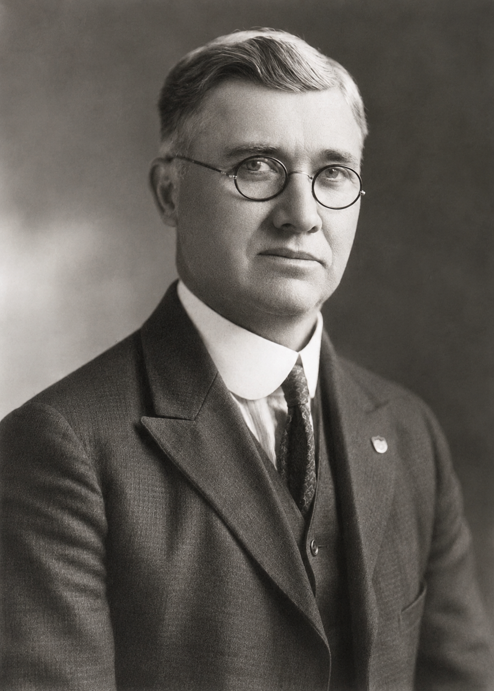
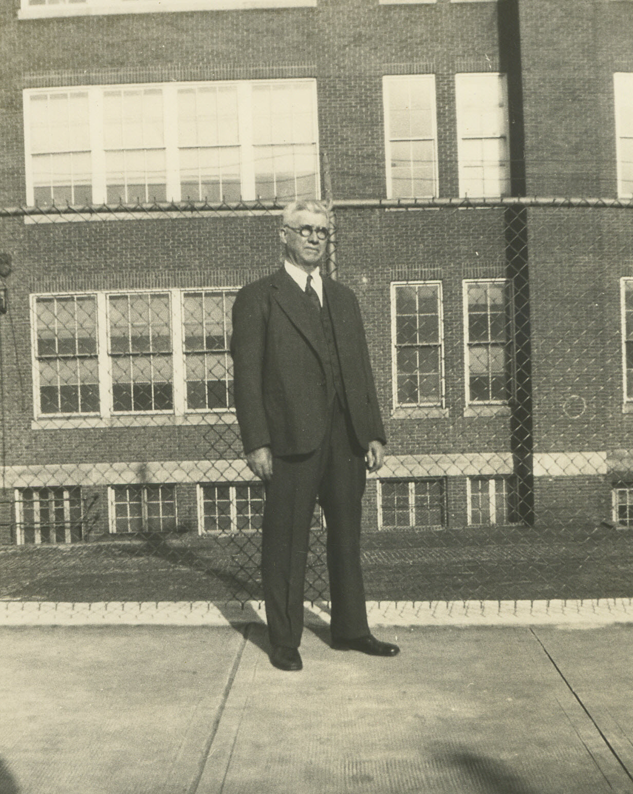
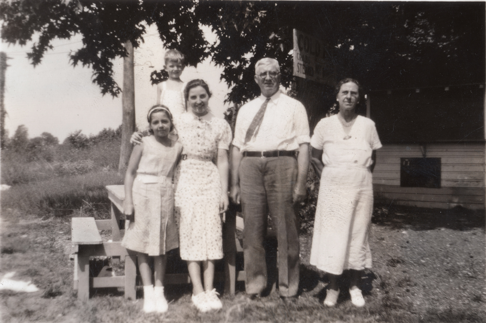
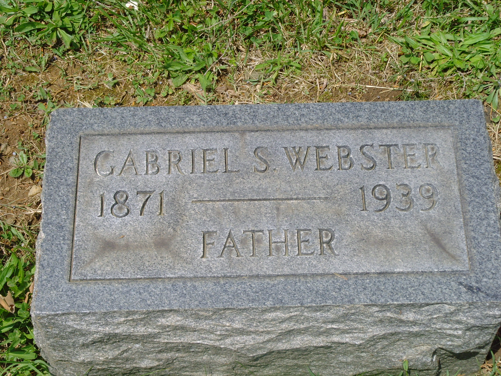

William Gabriel Snead Webster
1871–1939

Life Events
Born: June 29, 1871
Died: April 17, 1939
Family
Spouse:
Children
Military Service
No military service information has been added.
Biography
William Gabriel Snead Webster was born on June 29, 1871, in Somerset County, Maryland. In his earlier years, he was known as William Snead Webster and was recorded as William S. Webster in the 1910 United States Federal Census. Later in life, he went by Gabriel Snead Webster. He married Addie Leola Daniel. He died on April 17, 1939, in Baltimore County, Maryland.
Photos


Grave & Burial

Sources
-
1899 Marriage License Application – Snead Webster and Addie Daniel
Type: marriageApplication for a marriage license submitted to the Clerk of the Circuit Court for Somerset County, Maryland, on December 23, 1899. The document identifies the prospective groom as Snead Webster, age 27, and the prospective bride as Addie Daniel, age 18. Both were recorded as single, white, and residents of Somerset County, Maryland. The application was made under oath by W. O. Brown before Clerk Albin T. Beauchamp. This record documents their intention to marry but does not independently establish the date on which the marriage ceremony occurred.
Location: Somerset County, Maryland, United States
Supports: Snead Webster and Addie Daniel were named in a marriage license application dated December 23, 1899., Snead Webster was recorded as 27 years old., Addie Daniel was recorded as 18 years old., Both applicants resided in Somerset County, Maryland., Both applicants were recorded as single., The application was submitted to the Clerk of the Circuit Court for Somerset County, Maryland.
-
1900 United States Federal Census – Snead and Addie Webster
Type: censusThe Twelfth Census of the United States, enumerated June 22, 1900, records Snead Webster on line 23 as head of household, age 27, born October 1872, and his wife Addie Webster on line 24, age 18, born March 1882. The household was located in Tangier District, Somerset County, Maryland, Enumeration District 81, sheet 23. The census documents Snead and Addie living together as husband and wife in 1900. Addie's reported birth month and year differ from her Baltimore death certificate, which records August 18, 1881.
Location: Tangier District, Somerset County, Maryland, United States
Supports: Snead Webster and Addie Webster were recorded as husband and wife in the 1900 federal census., Snead Webster was recorded as 27 years old and born in October 1872., Addie Webster was recorded as 18 years old and born in March 1882., Snead and Addie Webster resided in Tangier District, Somerset County, Maryland, on June 22, 1900., The census was recorded in Enumeration District 81, sheet 23., The 1900 census birth information for Addie differs from the birth date recorded on her 1922 death certificate.
-
1900 Property Deed – Snead Webster and Webster Family
Type: deedProperty deed dated October 5, 1900, involving Noah W. Webster and his wife Rose A. Webster, and John F. Webster and his wife Lucy B. Webster, of Baltimore City, Maryland. The deed records a conveyance to Snead Webster of Deals Island, Somerset County, Maryland, for a consideration of $115. The property is described as a lot or parcel of land situated on Deals Island, Somerset County, Maryland. The deed provides evidence of Snead Webster's involvement in property ownership on Deals Island and identifies other Webster family members participating in the transaction. Their precise relationships to Snead require separate verification.
Location: Deals Island, Somerset County, Maryland, United States
Supports: A property deed dated October 5, 1900, names Snead Webster as the recipient of a land conveyance., The deed identifies Noah W. Webster and Rose A. Webster as grantors., The deed identifies John F. Webster and Lucy B. Webster as grantors., The consideration recorded in the deed was $115., The property was situated on Deals Island, Somerset County, Maryland., Snead Webster was identified as being of Deals Island, Somerset County, Maryland.
-
1909 Land Deed – Addie L. Webster and Snead Webster to Talmage D. Mister
Type: deedDeed dated May 12, 1909, in which Snead Webster and Addie Webster, his wife, of Somerset County, Maryland, conveyed land to Talmage D. Mister of the same county for a stated consideration of $575. The deed refers to land previously granted to Addie Webster by Lazarus B. Wilson and his wife in 1906. Family tree research identifies Lazarus Benjamin Wilson (1857–1922) as Addie's maternal uncle, although that relationship is not established by the deed itself. The document provides evidence of a subsequent land transaction involving Addie and her husband and a possible connection to the property Addie acquired in 1906.
Location: Somerset County, Maryland, United States
Supports: Snead Webster and his wife Addie Webster participated in a land conveyance dated May 12, 1909., The grantee was Talmage D. Mister of Somerset County, Maryland., The stated consideration was $575., The deed refers to a previous conveyance involving Addie Webster and Lazarus B. Wilson in 1906., Snead and Addie Webster were identified as husband and wife in the deed.
-
1910 United States Federal Census – William S. Webster Family
Type: censusThe 1910 United States Federal Census records the household of William S. Webster (age 38) and his wife Addie (age 28), along with their children Maynard S. (age 9), Susie C. (age 8), Florence N. (age 6), and Charles D. (age 9 months). William S. Webster was also known as William Snead Webster and later as Gabriel Snead Webster. The household was enumerated in Deal Island District 14, Somerset County, Maryland, Enumeration District 89, Sheet 3A.
Location: Deal Island District 14, Somerset County, Maryland, United States
Supports: Susie Catherine Webster was living with her parents and siblings in Somerset County, Maryland, in 1910., Susie C. Webster was recorded as eight years old in the 1910 census., William S. Webster and Addie Webster were recorded as the parents in Susie's household., The household included Maynard S., Susie C., Florence N., and Charles D. Webster.
-
1920 United States Federal Census – Gabriel S. Webster Family
Type: censusThe 1920 United States Federal Census enumerates the household of Gabriel S. Webster (age 48) and his wife Addie (age 38), along with their children Maynard (age 19), Susie (age 17), Florence (age 16), Charles (age 10), Catherine (age 3 years and 11 months), and James W. (age 6 months). The family was living in Ward 6 of Baltimore City, Maryland, Enumeration District 69, Sheet 7B. Gabriel S. Webster was also known as William Gabriel Snead Webster and had previously been recorded as William S. Webster in the 1910 census.
Location: Ward 6, Baltimore City, Maryland, United States
Supports: Gabriel S. Webster and Addie Webster were living in Baltimore City, Maryland, in January 1920., The Webster household included Maynard, Susie, Florence, Charles, Catherine, and James W. Webster., The family had relocated from Somerset County, Maryland, to Baltimore City between the 1910 and 1920 censuses., William Gabriel Snead Webster was recorded under the name Gabriel S. Webster in the 1920 census., Mary Catherine Webster, recorded as Catherine, was approximately three years and eleven months old., James Wilson Webster was approximately six months old.
-
1922 Maryland Death Certificate – Addie L. Webster
Type: death_certificateCertificate of Death D 63808, issued by the Health Department of the City of Baltimore, records Addie L. Webster's death on April 26, 1922, at age 40 years, 8 months, and 8 days. It gives her birth date as August 18, 1881, and birthplace as Deals Island, Maryland. Her father is identified as James Daniel and her mother as Mary C. Wilson, both reportedly born in Somerset County, Maryland. Addie was married to Gabriel S. Webster, who served as informant. Her residence and place of death are recorded as 2602 East Fayette Street, Baltimore, where she had reportedly lived for eight years. Her occupation was listed as housewife, and the certified cause of death was chronic myocarditis, with a stated duration of two years. Burial was recorded at Woodlawn Cemetery on April 28, 1922. The street number differs from the apparent 2202 East Fayette Street reported in her Baltimore Sun death announcement, a discrepancy requiring further examination.
Location: Baltimore City, Maryland, United States
Supports: Addie L. Webster was born on August 18, 1881., Her reported birthplace was Deals Island, Maryland., Her father was identified as James Daniel., Her mother was identified as Mary C. Wilson., Both parents were reported to have been born in Somerset County, Maryland., Her husband was Gabriel S. Webster., Addie died on April 26, 1922, in Baltimore, Maryland., Her age at death was recorded as 40 years, 8 months, and 8 days., Her residence and place of death were recorded as 2602 East Fayette Street., The stated cause of death was chronic myocarditis., Gabriel S. Webster was the informant., Burial was recorded at Woodlawn Cemetery on April 28, 1922.
-
1922 Death Announcement – Addie L. Webster
Type: newspaperDeath announcement published in The Baltimore Sun on April 28, 1922, page 17, reporting that Addie L. Webster died on April 26, 1922, at her residence, 2202 East Fayette Street, Baltimore, Maryland, aged 40 years. She was identified as the beloved wife of Gabriel Snead Webster. Funeral services were scheduled at the family residence on Friday afternoon, April 28, at 2 o'clock, followed by interment in Woodlawn Cemetery. Source: The Baltimore Sun, April 28, 1922, page 17, accessed through ProQuest Historical Newspapers.
Location: Baltimore, Maryland, United States
Supports: Addie L. Webster died on April 26, 1922., Addie was reported to be 40 years old at her death., Her residence at death was 2202 East Fayette Street, Baltimore, Maryland., Her husband was identified as Gabriel Snead Webster., Her funeral was scheduled for April 28, 1922, at 2:00 p.m., Her burial was announced for Woodlawn Cemetery.
-
1930 United States Federal Census – Adam Kramer and Snead Webster Families
Type: censusThe Fifteenth Census of the United States, 1930, Maryland, Baltimore City, Ward 4, Enumeration District 4-532, Sheet 6A, enumerated April 2, 1930. Lines 18–19 record Adam Kramer (age 26) and his wife Sue Kramer (recorded age 26). Lines 20–22 record the immediately following household, headed by Snead Webster (age 58), with his sons Charles Webster (age 21) and Wilson Webster (age 10). Snead Webster was William Gabriel Snead Webster, father of Sue, Charles, and Wilson. The two households were located next to one another on Luzerne Avenue in Baltimore. The census records Sue as age 26, although her reported birth date of October 22, 1902, would make her 27 at the time of enumeration. This record establishes that Charles and Wilson were living in their father's household in April 1930, providing important context for research into the Webster children's living arrangements following the death of their mother, Addie Leola Daniel Webster, in 1922.
Location: Luzerne Avenue, Ward 4, Baltimore City, Maryland, United States
Supports: Adam Kramer and Sue Kramer were living together in Baltimore City in April 1930., William Gabriel Snead Webster was recorded under the name Snead Webster in the 1930 census., Snead Webster was recorded as 58 years old., Charles Webster was recorded as 21 years old., Wilson Webster was recorded as 10 years old., Charles and Wilson Webster were living in their father's household in April 1930., The Kramer and Webster households were enumerated consecutively on Luzerne Avenue in Baltimore., The census records Sue Kramer as age 26, although her reported birth date indicates she was 27.